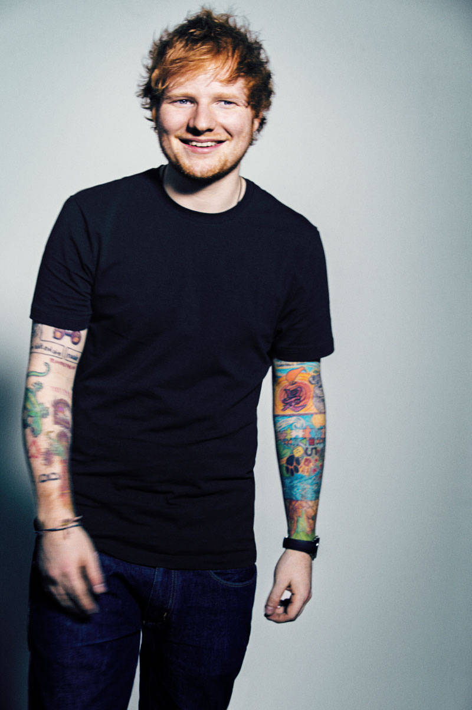

O Cantor:
|  | Ed Sheeran.Nasceu na Inglaterra no dia 17 de fevereiro de 1991, tem 23 anos, é cantor e compositor. Seu hit número 1 é a música "The A Team" que conquistou o 3º lugar nas paradas musicais do Reino Unido. Os pais de Ed são do meio artístico o que o impulsionou a dar vasão à veia artística. Ele aprendeu a tocar guitarra muito novo e começou a escrever músicas durante o colégio. No ano de 2010 seu número de fãs cresceu graças ao seu canal no YouTube (@EdSheeran) o que fez com que Elton John ouvisse sua músicas e melhor ainda, que gostasse do som de Ed. |